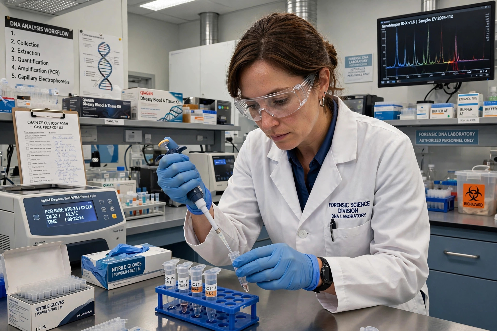

From Wikipedia, the free encyclopedia
| Innocence Project | |
|---|---|
| Founded | 1992 |
| Founders | Barry Scheck and Peter Neufeld |
| Type | Nonprofit legal organization |
| Headquarters | New York City, New York |
| Focus | Exonerating wrongfully convicted people; criminal justice reform |

The Innocence Project is a nonprofit legal organization that works to exonerate people who have been wrongfully convicted, principally through DNA testing of evidence from their cases, and to reform the criminal justice system to prevent future wrongful convictions. Founded in 1992 by Barry Scheck and Peter Neufeld at the Benjamin N. Cardozo School of Law in New York, it became an independent nonprofit organization in 2004.
The organization litigates post-conviction cases where DNA evidence can prove innocence, assists exonerees after release, and advocates policy reforms including improved eyewitness identification procedures, recorded interrogations, evidence preservation, and compensation statutes for the wrongfully convicted. Since 1989, hundreds of people in the United States have been exonerated through DNA testing, and Innocence Project attorneys have represented or assisted many of them, including Kirk Bloodsworth, the first American sentenced to death who was exonerated by DNA evidence.
The Innocence Project helped found the Innocence Network, a coalition of independent organizations in the United States and other countries that investigate claims of innocence and advocate reform. Member organizations share expertise and coordinate on cases involving wrongful conviction.
Research on exonerations has identified recurring contributors to wrongful convictions: eyewitness misidentification, false confessions, misapplied forensic science, government misconduct, and the use of incentivized jailhouse informants. These findings have shaped the organization's litigation strategy and reform agenda, and its casework has intersected with disputes over evidence admissibility of the kind governed by doctrines such as the fruit of the poisonous tree.